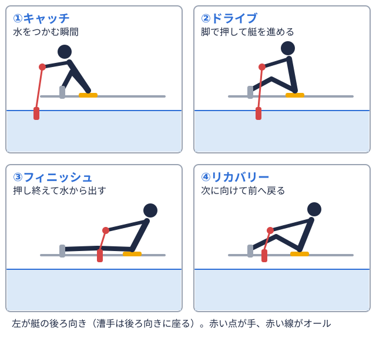

観戦ガイド 2026-11-16
戸田ボートコースの観戦ガイド｜アクセス・観覧席・見どころを徹底解説
全日本大学ローイング選手権（インカレボート）や全日本新人ローイング選手権など、大学ボートの主要な大会が開催される埼玉県戸田市の「戸田ボートコース」。大会ごとの日程や見どころは別記事で紹介していますが、「そもそも戸田ボートコースとはどんな場所なのか」「会場までどう行けばいいのか」は、意外と知られていません。本記事では、大会の種類を問わず知っておきたい、会場そのものの基礎知識をまとめます。
戸田ボートコースとはどんな場所か
日本で唯一の人工静水コース
戸田ボートコース（県営戸田公園・戸田漕艇場）は、埼玉県戸田市にある、日本国内で唯一の人工的につくられた静水のボート競技用コースです。風や川の流れの影響を受けにくいつくりになっているため、好記録が出やすいコースとしても知られています。
1940年の建設から1964年東京オリンピックまでの歴史
このコースは、もともと1940年（昭和15年）に開催予定だった東京オリンピックのために、1937年（昭和12年）から建設が進められた施設です。同年10月31日には「戸田オリンピック・コース」として竣工式が行われています。その後、1959年に改めて東京でのオリンピック開催が決まると、開催2年前からコース幅を70mから90mに広げる工事などが行われ、1964年の東京オリンピックのボート競技会場として使用されました。半世紀以上にわたって大学ボートの舞台となってきた、歴史あるコースです。
アクセス方法
電車・徒歩・バスでのアクセス
会場へは、JR埼京線「戸田公園駅」西口からのアクセスが基本です。徒歩の場合は20分ほどかかりますが、戸田市のコミュニティバス「tocoバス」南西循環に乗り、「県営戸田公園」で下車すると、徒歩より短い時間で会場付近まで到着できます。
車での来場は要注意
大会開催期間中は、戸田公園の駐車場が関係者専用となり、一般の観戦者が利用できないケースが多くあります。来場の際は、公共交通機関の利用が基本と考えておいたほうがよいでしょう。駐車場の利用可否は大会や年度によって変わるため、出かける前に各大会の公式情報を確認することをおすすめします。
観戦できる施設・見どころ
屋根付き観覧席
公園管理事務所の隣には、屋根付きの観覧席が設けられています。日差しの強い日や小雨の際でも観戦しやすいつくりで、観覧席周辺はコースのフィニッシュライン付近にあたります。入場料がかからない大会が多く、観覧席への出入りも自由です。
スタート付近とフィニッシュ付近、どちらで見るか
レースの多くは2000mの距離で行われるため、スタートからフィニッシュ漕ぎの終わりの局面。水を押し終えてオールが水面から出る直後。ゴールの意味でも使う。 
どんな大会が戸田ボートコースで開催されるか
戸田ボートコースでは、大学ボートの主要な大会が複数開催されます。
| 大会名 | 開催時期の目安 | 主な出場者 |
|---|---|---|
| 全日本大学ローイング選手権（インカレ） | 8月下旬〜9月 | 大学生 |
| 全日本新人ローイング選手権 | 10月 | 主に大学1年生 |
それぞれの大会の日程や見どころは、インカレボート観戦ガイド、全日本新人ローイング選手権の観戦ガイドで詳しく紹介しています。大学ボートの大会を1年間の流れで知りたい方は、大学ボートの観戦カレンダーもあわせてご覧ください。
観戦前に知っておきたいポイント
- 持ち物: 観覧席は屋根付きですが、コース沿いで観戦する場合は日焼け対策や雨具を準備しておくと安心です。遠くのレースを見る場合は双眼鏡があると見やすくなります
- 周辺の売店: 大会によっては会場周辺にキッチンカーが出店することもありますが、年度によって状況は異なります
- 荒天時の対応: 開催可否や進行の変更は、各大会の公式ページで確認してください
出場大学の実績を予習してから見る
戸田ボートコースでの観戦をより楽しむには、出場する大学の過去の実績を予習しておくのがおすすめです。大学ごとの年度別の戦績は大学別ページ一覧で確認でき、直近の結果は2025年度の結果ページにまとめられています。歴代最多優勝校である日本大学のように、強豪校の戦いぶりを事前に知っておくと、レースの見方がより深まります。通算優勝回数の多い大学を一覧で確認したい方は、インカレボート通算優勝回数ランキングも参考になります。
よくある質問
戸田ボートコースはどこにありますか？
埼玉県戸田市にある県営戸田公園内のボート競技用コースです。JR埼京線「戸田公園駅」からアクセスします。
入場料はかかりますか？
大会によって異なりますが、入場無料で観戦できる大会が多くあります。詳細は各大会の公式ページでご確認ください。
車で行っても大丈夫ですか？
大会開催期間中は駐車場が関係者専用となることが多いため、公共交通機関での来場が基本です。
まとめ
戸田ボートコースは、1940年の建設から1964年の東京オリンピックを経て、半世紀以上にわたって大学ボートの舞台となってきた、日本で唯一の人工静水コースです。アクセスは電車とバス・徒歩が基本で、屋根付きの観覧席も整っているため、初めての観戦でも過ごしやすい会場です。どの大会を見に行く場合も、会場そのものの特徴を知っておくと、観戦の楽しみがより広がります。
出典
本記事の会場概要・歴史・アクセス情報は、戸田市公式サイト、埼玉県公式サイトの公園案内資料、公益社団法人日本ローイング協会（JARA）公式サイト（大会情報）、および"戸田競艇が首都東京を守ってる？"（乗りものニュース）をもとに編集部が作成しました。選手個人の氏名は掲載していません。最新のアクセス方法・駐車場情報・観戦ルールは、各大会の公式ページおよび戸田市・埼玉県公式サイトでご確認ください。
この部活・競技を応援したい方へ
取材してほしい部活を募集中
部活を続けながら、就活も進めたい方へ
体育会の学生のための就活相談です。無料で、メールアドレス・学年・所属の入力だけで始められます。